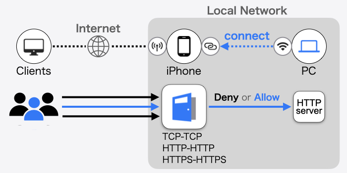

SocDoor
BETA
パーソナルなバックドアであなたのラップトップをサーバーにしよう。
（提出作業中）
説明を隠す
SocDoor は、グローバル IP を持たないラップトップ PC に対してパケットを中継します。
サーバープログラムを検証したいときに、PC をあなたの iPhone に接続してインターネットにサービスを公開することができます。

TCP-TCP
iPhone のモバイル通信インターフェースで受信した TCP データをバックエンドの任意の TCP サービス（HTTP, HTTPS を含む）へ転送します。
ポートフォワーディングではなく、いわゆる 1 対 1 のロードバランサーのように動作します。
HTTP-HTTP, HTTPS-HTTPS
iPhone のモバイル通信インターフェースで受信した HTTP（または HTTPS）リクエストをバックエンドの WEB サービスに転送します。
リバースプロキシとして動作します。また、サーバ証明書を用意することで HTTPS を使用したセキュアな通信が可能となります。
現在、本機能は使用できません。
本アプリは BETA バージョンであり、今後アップデートしていきます。


Apple、Appleのロゴは、米国およびその他の国で登録されたApple Inc.の商標です。